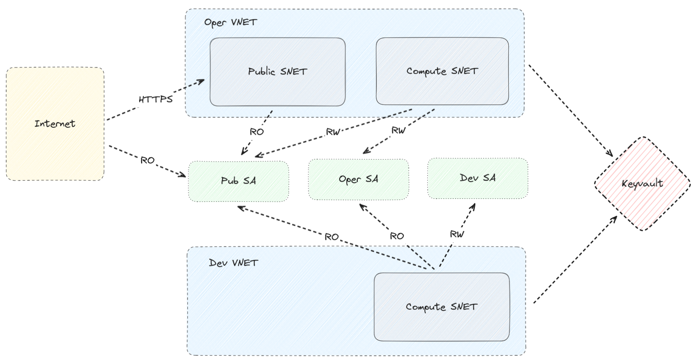
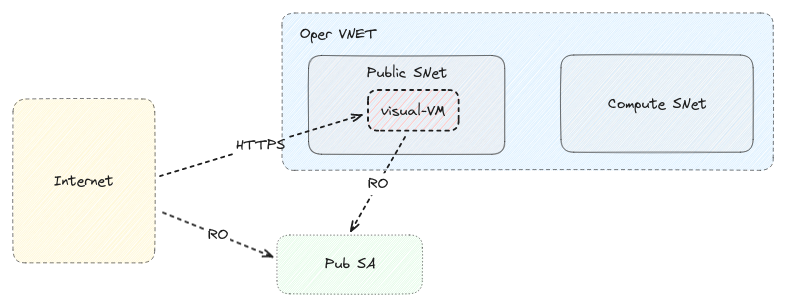
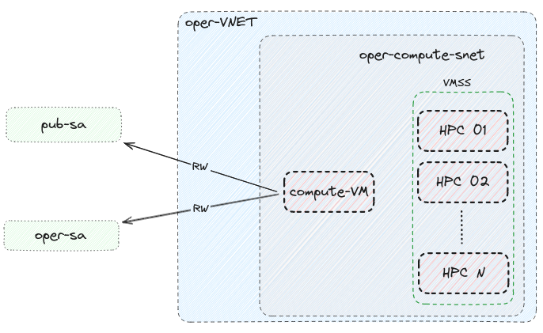

HPC@Azure¶
This repo contains Infrastructure-as-a-Code (IaaC) for deploying an HPC cluster on Azure.
The code has been developed in order to support the pre-operational phase of the Seareport Project. We’ve extracted the core of the codebase and made it available in this repository, hoping it might serve others as well.
During this process, we’ve simplified several aspects and removed implementation specific details. For instance, Seareport deploys Thalassa, a web application designed for visualizing large scale sea level data on unstructured mesh data. However, this specific application may not be useful for other projects, so we’ve replaced this component with a placeholder, in this case, an empty Virtual Machine.
In the same spirit, the actual code that provisions the other VMs and the HPC cluster has been removed. What this repository offers is a straightforward way to replicate Seareport’s high-level design. To extract value from it, you’ll need to tailor it to your specific needs.
Objectives¶
The main objectives include:
- Facilitating the effortless deployment of two separate HPC instances that can be dynamically scaled according to demand.
- Utilizing the first HPC instance for the execution of a model in an “operational” mode (for instance, running the model bi-daily) and for the storage and distribution of the outcomes.
- Employing the second HPC instance to aid in the ongoing refinement of the model.
It is crucial that these two HPC instances operate independently of each other. Any “development” tasks should be conducted in a manner that does not disrupt or interfere with the operational setup.
To achieve this goal a Bicep-based IaaC (Infrastructure-as-a-Code) solution has been developed.
Repository directory structure¶
There are three main directories:
- The
infradirectory contains the bicep modules that manage the creation of resources on Azure - The
provisioningdirectory contains code helpers that can be used to provision the VMs usingansible. This directory only contains sample playbooks. The actual provisioning is omitted since it is application/project specific. - The
docsdirectory contains the code that generates the current document.
Prerequisites¶
- Azure cli
- Azure bicep
- ansible for provisioning (optional)
- python 3 for building docs
Infrastructure¶
Quick start¶
- Determine the Azure Subscription ID and the correct Tenant ID for your subscription using these instructions
- Login to Entra ID with azure-cli. The tenant UUID is the one you determined in step 1. E.g.:
az login --tenant 1647eb98-698c-4714-b3b5-8cc15f794d36 - Ensure that everything worked as expected:
az account show - Enter the
infradirectory:cd infra -
Edit the
main.bicepparamfile and fill in appropriate values to it. At the very least you should changeprojectand the SSH public key value. You can identify the principal IDs by using a command like this:az ad user show --id 'George.Breyiannis.ec.europa.eu#EXT#@europeancommissionhotmai379.onmicrosoft.com' -
Deploy the infrastructure with the following command (it requires confirmation):
az deployment sub create -c --template-file main.bicep --parameters main.bicepparam
After a couple of minutes everything should be up and running.
Design¶
The high level diagram of the infrastructure can be seen in the following image.

Networking and Security¶
When it comes to networking, the important points are:
- There are two VNets,
operanddev. Communication between the VNets is not permitted. - There is a Keyvault for storing secrets. The Keyvault is only accessible from within the VNets.
- The
operVNet has two Subnets:publicwhich is accessible from the internet andcomputewhere the HPC cluster is running. Direct communication between the two Subnets is not permitted. If the VMs of thepublicsubnet need data they should read them from the storage account where the VMs of thecomputesubnet wrote them to. - The
devVNet only has thecomputesubnet.
Storage¶
As we can see there are 3 Storage Accounts:
pub-sawhere the operational cluster stores the data that are meant to be disseminated to 3rd partiesoper-sawhere the operational cluster stores that data that are needed for its operationdev-sawhere the development cluster stores that data that are needed for its operation
It should be noted that:
- The operational cluster does not have access to
dev-sa - The development cluster has RO only access to
pub-saanddev-sa. The idea is that if there is any issue with the model output, the developers of the model should be able to access the data in order to debug it. The same is true for input data. You probably only want to store them once inoper-sa
Public Subnet¶
In the current implementation the Public SNet is very simple. It has just a single VM which is being used to read data from
pub-sa and visualize them via a web-app.
Note
The actual deployment of the web application is omitted since it is implementation specific.

Compute Subnet¶

Naming conventions¶
This naming convention is intended to bring uniformity and predictability to resource deployment and management. It supports efficient searching, sorting, and automation processes, making it easier for users and systems to navigate our Azure infrastructure.
This section explains the structure of the naming convention and the rationale behind it to help users understand how to locate and identify Azure resources within the system.
Naming Structure¶
The general pattern for naming Azure resources is as follows:
{project}-{environment}-{domain}-[{identifier}-]{resource_suffix}
Each segment of the naming pattern plays a specific role:
-
{project}: This is the project identifier, a shorthand for the project or application to which the resource belongs. Please keep it short (3-5 chars) since Azure has relatively short limits for Storage Accounts names. -
{environment}: Resources are categorized by the environment they reside in. The environments we make use of aredevfor development andoperfor operational or production. There is also thecommonenvironment which contains resources that are not environment-specific (e.g. Keyvault and Storage accounts). -
{domain}: This denotes the functional area or service that the resource is a part of, such asnetfor network-related resources,storagefor storage-related resources etc. -
{identifier}: Used when there are multiple similar resources that need differentiation, such as two subnets or network security groups within the samedomain. For example,publicandcomputeare identifiers that help distinguish between different subnets. -
{resource_suffix}: This is a short code that represents the type of Azure resource.
Special Considerations¶
Due to Azure requirements, Storage Account names cannot contain hyphens and must be globally unique.
With the naming pattern we use you shouldn't run into duplicates, but in the rare chance that you do
try to use a different value in project.
List of suffixes¶
The suffixes that we make use of are:
rgfor Resource Groupsvmfor Virtual Machinesvmssfor Virtual Machine Scale Setsvnetfor Virtual Networkssnetfor Subnetsnsgfor Network Security Groupskvfor Keyvaultssafor Storage Accountsnicfor Network Interfacespipfor Public IP Addresses
Resources and Resource groups¶
List of ResourceGroups¶
After deployment you should end up with the following Resource Groups:
$ PROJECT=aaa
$ az group list --query "[?starts_with(name, '${PROJECT}')].name" --output table
aaa-common-keyvault-rg
aaa-common-storage-dev-rg
aaa-common-storage-oper-rg
aaa-common-storage-pub-rg
aaa-dev-compute-rg
aaa-dev-network-rg
aaa-oper-compute-rg
aaa-oper-network-rg
aaa-oper-visual-rg
List of Resources¶
After deployment you should end up with the following Resources:
$ PROJECT=aaa
$ az resource list --query "[?starts_with(name, '${PROJECT}')].name" --output tsv | sort